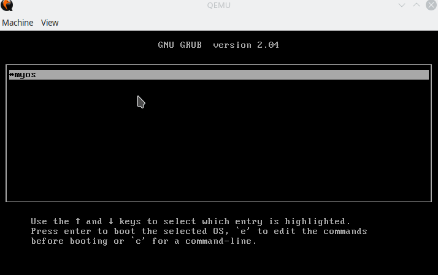

What
What we are trying to achieve
For a Custom OS to be any kind of useful we need some means of interaction with the user. We already have printing on screen since Part 2 of the series, but this is only one way: the OS can speak to the user, but the user can’t talk back.
One way to interact with our custom OS is keyboard input. With the ability to print text on screen and get keyboard input from the user we can already build simple dialog systems.
What to expect
At the end of this part of the series you will be able to type on your keyboard and see the characters be printed on screen by your CustomOS.

When
Keyboard input early on
I’ve chosen to put keyboard input early on, as point two of this projects roadmap (see roadmap in Part 1 of the series), in order to get means to interact with our kernel. This will also become valuable for debugging and testing purposes.
Why
Why keyboard input
With keyboard input we can already implement first useable applications. We could for instance print a menu and a user can make his selection by keyboard. We could then carry on in our program depending on that user selection. This is aleady enough for e.g. a simple text based adventure game.
Background
Keyboards, PIC and PS/2 Emulation
Traditionally on x86 computers the keyboard input is handled by the 8259A Programmable Interrupt Controller (PIC). The keyboard is electrically connected to the PIC and can be queried for the scancode of the keyboard. This scancode alters depending on what button was pressed or released.
Modern computers have an APIC, a further advancement of that original PIC. Modern computers also support USB-Keyboards by the USB-HID(Human Interface Device) class. USB-HID is relatively complicated to support in a Custom OS, although it can of course, be done and there are small libraries for Arduino’s (based on ATmega micro-controllers).
As a starting point and for simplicity we can rely on the PS/2-Emulation of most modern BIOSes that emulates the old PIC and use that directly. This is far easier than implementing a USB-HID-Device-Interface and is sufficient for now.
How
Reading and Writing to Keyboard Buffers
keyboard/keyboardActivePolling.h
The following code snippets can be copied to a file, keyboardActivePolling.h, one after another.
To read and write to the keyboard, we use special buffers reserved for the keyboard in the PIC.
#define KBC_STATUS 0x64
#define KBC_EA 0x60I’ll be dropping the scancode we’ve read from the keyboard to a global variable for simplicity.
uint8_t keyboardActivePolling_lastScanCode = 0;To read and write to these buffers we use the inb and outb CPU instructions. As we’re running our own kernel we have full privilidges to run these low-level commands. We can run these assembly commands straight from our C-Code as inline assembly:
static inline unsigned char inportb (unsigned short _port) {
unsigned char rv;
__asm__ __volatile__ ("inb %1, %0" : "=a" (rv) : "dN" (_port));
return rv;
}
static inline void outportb (unsigned short _port, unsigned char _data) {
__asm__ __volatile__ ("outb %1, %0" : : "dN" (_port), "a" (_data));
}Much of the fun of writing your own Custom OS is that we can do this sort of low-level programming which would not be possible in a conventional operating system.
If we were to run our kernel on real hardware we would, of course, risk potentially damaging the hardware. I suggest to stay in QEmu-Emulation and if you’d like to run the kernel on real hardware to do that only on old dispensable computers.
Almost all machine interaction in the kernel of our custom OS is reading and writing bytes by these two functions.
As a start I’ve chosen to use active polling. Active polling means continiously asking the keyboard if it has a scancode that we can read. This is highly inefficient as during polling the CPU is unable to carry out other tasks.
A much better approach, which I will be covering in the next post, is to set a keyboard intterupt and use an interrupt handling routing. With that in place the CPU can work on other tasks and get “interrupted” by the keyboard only when there is new input instead of consuming all of its CPU cycles with continiously checking the keyboard.
A Delay function
For the first approach with active polling we need a way to add a delay between each request to the keyboard. Traditionally programming languages provide a delay function. A good delay function would be given a number in units of time. It would then count CPU cycles that have passed and, having queries the CPU and realtime clock, can compute the number of CPU cycles per micro-seconds in order to wait the expected time.
Since we don’t have the code for enumerating the CPU cycles or the realtime clock a rough delay function that executes the “nop” machine instruction (nop=”no operation”) can be used. The actual delay will vary depending on the current CPU frequency, but it’s sufficient for our first active polling keyboard driver.
void delay() {
for(int i = 0; i < 1000000; i++) { // accurate time delay would require CPU ClockCycles/USec conversion
__asm__ __volatile__ ("nop");
}
}Sending commands to a keyboard
In order to send commands to the keyboard we should make sure the buffers are free and the keyboard is ready
static void keyboardActivePolling_sendCommand(uint8_t command) {
while ((inportb(KBC_STATUS) & 2)) {} // wait until cmd buffer is free
outportb(KBC_EA, command);
}Retrieving scancodes from the keyboard
The scancode we will receive from the keyboard consist of lower and upper-bytes that need to be combined. This code is taken from the osdev bare bones tutorial [1].
uint32_t keyboardActivePolling_getScancode() {
static unsigned e0_code = 0;
static unsigned e1_code = 0;
static uint16_t e1_prev = 0;
uint8_t scancode = 0;
if (inportb(KBC_STATUS) & 1) {
// a scancode is available in the buffer
scancode = inportb(KBC_EA);
if (e0_code == 1) {
// scancode is an e0 code
e0_code = 0;
return (0xe000 | scancode);
} else if (e1_code == 1) {
// scancode is first byte of e1 code
e1_prev = scancode;
e1_code = 2;
} else if (e1_code == 2) {
// scancode is second byte of e1 code (first is in e1_prev)
e1_code = 0;
return (0xe10000 | e1_prev << 8 | scancode);
} else if (scancode == 0xe0) {
e0_code = 1;
scancode = 0;
} else if (scancode == 0xe1) {
e1_code = 1;
scancode = 0;
}
}
return scancode;
}Access functions for our Keyboard code
With that we can build an init and loop function. The latter polls the keyboard, thereby blocking (active polling) until a key is pressed.
void keyboardActivePolling_init() {
// empty keyboard buffer
while (inportb(KBC_STATUS) & 1) {
inportb(KBC_EA);
}
// activate keyboard
keyboardActivePolling_sendCommand(0xF4);
while (inportb(KBC_STATUS) & 1) {
inportb(KBC_EA); // read (and drop) what's left in the keyboard buffer
}
// self-test (should answer with 0xEE)
keyboardActivePolling_sendCommand(0xEE);
}
void keyboardActivePolling_loop() {
uint8_t scancode = 0;
while ((scancode = keyboardActivePolling_getScancode()) == 0) { // loop until we get a keypress
delay();
}
keyboardActivePolling_lastScanCode = scancode;
}Now with that we initialize the keyboard from the Kernel with “keyboardActivePolling_init()” and then ask for the last pressed key on the keyboard with “keyboardActivePolling_loop()”. The scancode of that key is then stored in “keyboardActivePolling_lastScanCode”.
Translating Keyboard scancodes to readable ASCII text
keyboard/keyboardActivePolling.h
The scancode is only in-part useful. The control sequences (tab, shift, control, enter, …) can be used directly. But if we want to convert what was typed to readable text we need to convert to ASCII-symbols.
The conversion will depend on your keyboard layout. For a US-keyboard layout the following mapping is floating around on the web [1]:
char kbd_US [128] = {
0, 27, '1', '2', '3', '4', '5', '6', '7', '8', '9', '0', '-', '=', '\b',
'\t', /* <-- Tab */
'q', 'w', 'e', 'r', 't', 'y', 'u', 'i', 'o', 'p', '[', ']', '\n',
0, /* <-- control key */
'a', 's', 'd', 'f', 'g', 'h', 'j', 'k', 'l', ';', '\'', '`', 0, '\\', 'z', 'x', 'c', 'v', 'b', 'n', 'm', ',', '.', '/', 0,
'*',
0, /* Alt */
' ', /* Space bar */
0, /* Caps lock */
0, /* 59 - F1 key ... > */
0, 0, 0, 0, 0, 0, 0, 0,
0, /* < ... F10 */
0, /* 69 - Num lock*/
0, /* Scroll Lock */
0, /* Home key */
0, /* Up Arrow */
0, /* Page Up */
'-',
0, /* Left Arrow */
0,
0, /* Right Arrow */
'+',
0, /* 79 - End key*/
0, /* Down Arrow */
0, /* Page Down */
0, /* Insert Key */
0, /* Delete Key */
0, 0, 0,
0, /* F11 Key */
0, /* F12 Key */
0, /* All other keys are undefined */
};Integrating Keyboard input into our Kernel
kernel.cpp
We can now include both headers at the top of our kernel.cpp.
#include "keyboard/keyboardActivePolling.h"
#include "keyboard/keyboardScancodeToAscii.h"and adapt our kernel_main-function:
extern "C" {
void kernel_main(void) {
terminal_initialize();
terminal_writestring("Hello, kernel World!\n");
keyboardActivePolling_init();
while(true) {
keyboardActivePolling_loop();
char c = kbd_US[keyboardActivePolling_lastScanCode];
if (c != 0) { // only printable characters
terminal_putchar(c);
}
}
}
}Result
After compiling and booting in QEmu with the build-and-boot.sh from the previous part of the series, we can type on the keyboard and see the text apprearing on the stream. As seen in the image above.
Progress
So far we’ve got a custom compiler that can compile bootable code. We can compile our own custom kernel with it. Boot it in QEmu and print text. We’ve now added Keyboard input by active polling and can print the input on the screen.
Currently the CPU is actively polling the keyboard and can’t do any other tasks while it’s waiting for user input. Next time we’ll change that by adding interrupt handling.
1] https://github.com/tehplague/baremetal/blob/master/keyboard.c